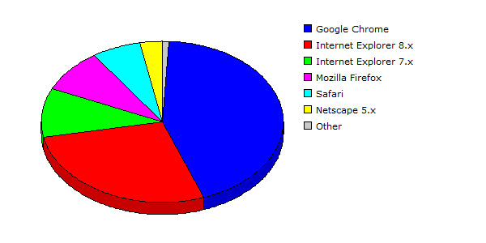

| Rank |
Browser |
Hits |
Visitors |
| 1 |
Google Chrome |
51900 |
29.76% |
3733 |
43.53% |
| 2 |
Internet Explorer 8.x |
75993 |
43.58% |
2358 |
27.50% |
| 3 |
Internet Explorer 7.x |
21085 |
12.09% |
842 |
09.82% |
| 4 |
Mozilla Firefox |
9039 |
05.18% |
752 |
08.77% |
| 5 |
Safari |
9213 |
05.28% |
552 |
06.44% |
| 6 |
Netscape 5.x |
6736 |
03.86% |
260 |
03.03% |
| 7 |
Mozilla |
144 |
00.08% |
49 |
00.57% |
| 8 |
Opera |
256 |
00.15% |
20 |
00.23% |
| 9 |
Internet Explorer 6.x |
8 |
00.00% |
6 |
00.07% |
| 10 |
Netscape 4.x |
11 |
00.01% |
4 |
00.05% |
| |
Total |
174385 |
8576 |
|
Description: This report contains statistics about the browsers that your visitors use.
|
|